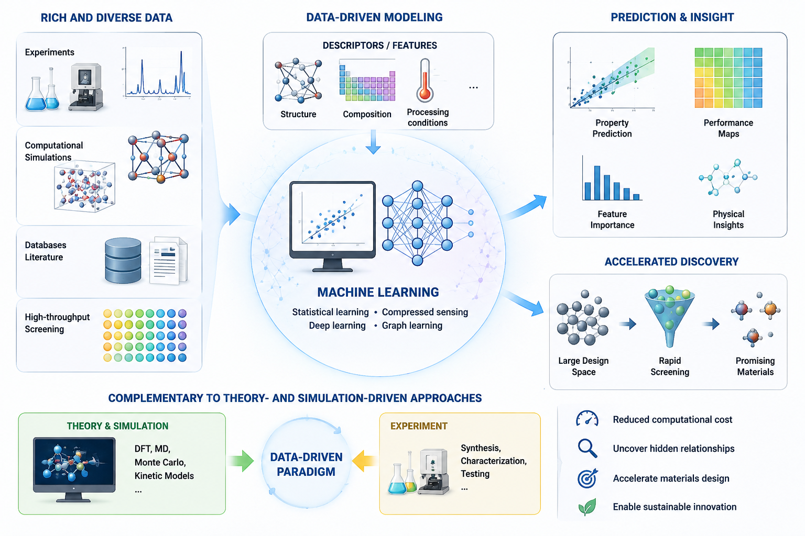

Data Driven Materials Modelling
Data-driven materials modeling leverages the increasing availability of experimental and computational data to establish quantitative relationships between material structure, composition, processing conditions, and properties. Through techniques such as machine learning, compressed sensing, and statistical learning, complex materials behavior can be analyzed and predicted with significantly reduced computational cost. This paradigm complements traditional theory- and simulation-driven approaches, enabling rapid screening of candidate materials, uncovering hidden physical insights, and accelerating materials design and discovery.

Discovery of Singlet Fission Materials
We develop a data-driven framework for the discovery of high-performance singlet fission materials by integrating generative AI, first-principles simulations, interpretable machine learning, and crystal structure prediction. Large molecular libraries are generated and screened using DFT calculations and SISSO-based models that predict crystal singlet-fission performance from molecular descriptors. The most promising candidates are further analyzed through machine-learning crystal structure prediction and high-accuracy GW-BSE calculations to evaluate crystal SF gain. This workflow enables rapid exploration of vast chemical spaces while maintaining quantum-mechanical accuracy, accelerating the design of next-generation materials for high-efficiency photovoltaic applications.

Atomistic Materials Simulation
First-principles calculations and molecular dynamics simulations are used to understand material properties at the atomic scale.